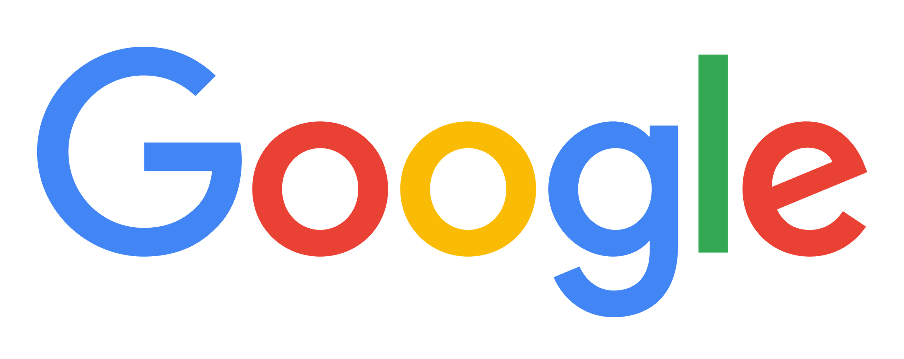

Google (谷歌)
Google 是源自美國的跨國科技公司，為Alphabet Inc.的子公司，業務範圍涵蓋網際網路廣告、網際網路搜尋、雲端運算等領域，開發並提供大量基於網際網路的產品與服務，其主要利潤來自於AdWords等廣告服務。Google由在史丹佛大學攻讀理工博士的賴利·佩吉和謝爾蓋·布林共同建立，因此兩人也被稱為「Google Guys」。
1998年9月4日，Google以私營公司的形式創立，目的是設計並管理網際網路搜尋引擎「Google搜尋」。2004年8月19日，Google公司在那斯達克上市，後來被稱為「三駕馬車」的公司兩位共同創始人與出任執行長的艾瑞克·施密特在此時承諾：共同在Google工作至少二十年，即至2024年止。Google的宗旨是「匯整全球資訊，供大眾使用，使人人受惠」（To organize the world's information and make it universally accessible and useful）；而非正式的口號則為「不作惡」（Don't be evil），由工程師阿米特·帕特爾（Amit Patel）所創，並得到了保羅·布赫海特的支援。Google公司的總部稱為「Googleplex」，位於美國加州聖塔克拉拉縣的山景城。2011年4月，佩吉接替施密特擔任執行長。在2015年8月，Google宣布進行資產重組。重組後，Google劃歸新成立的Alphabet底下。同時，此舉把Google旗下的核心搜尋和廣告業務與Google無人車等新興業務分離開來。
據估計，Google在全世界的資料中心內營運著上百萬台的伺服器，每天處理數以億計的搜尋請求和約二十四PB用戶生成的資料。 Google自創立起開始的快速成長同時也帶動了一系列的產品研發、併購事項與合作關係，而不僅僅是公司核心的網路搜尋業務。Google公司提供豐富的線上軟體服務，如雲端硬碟、Gmail電子郵件，包括Orkut、Google Buzz以及Google+在內的社群網路服務。Google的產品同時也以應用軟體的形式進入用戶桌面，例如Google Chrome網頁瀏覽器、Picasa圖片整理與編輯軟體、Google Hangouts即時通訊工具等。另外，Google還進行了行動裝置的Android作業系統以及Google Chrome OS作業系統的開發。其安卓系統至今為止仍是行動端的主要作業系統之一。
資訊分析網站Alexa資料顯示，Google的主域名google.com是全世界瀏覽量最高的站點，Google搜尋在其他國家或地區域名下的多個站點（google.co.in、google.de、google.com.hk等等），及旗下的YouTube、Blogger、Orkut等的瀏覽量都在前一百名之內。其中，社群網路服務Orkut於2014年9月關閉。
